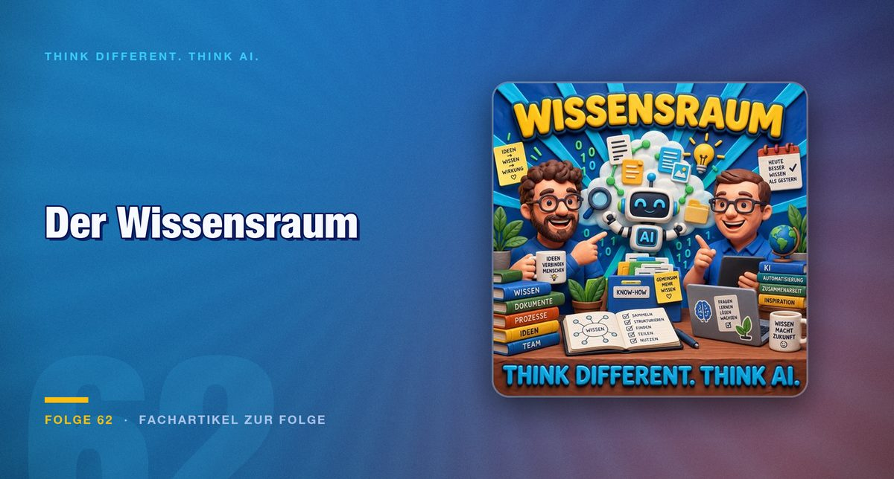

Folge 62 · Fachartikel zur Folge
Wissensraum statt Chatfenster: Warum Kontext über die Qualität eines Agenten entscheidet
Ein Agent arbeitet nur so gut wie der Kontext, den man ihm gibt. Wer seine Daten sortiert, bevor er sie einer KI übergibt, gewinnt an Qualität und verliert an Risiko.

Alexander Heusingfeld ist wieder zu Gast, diesmal ohne Jens. Die Frage, um die sich die Folge dreht: Wie baut man sich einen Wissensraum, mit dem ein KI-System wirklich arbeiten kann? Ein Agent leistet mit dem richtigen Modell und dem passenden Harness etwas. Entscheidend ist aber der Kontext, den man ihm mitgibt. Mit gutem Kontext reicht ein beiläufig gesprochener Satz. Ohne ihn hilft auch ein langer Prompt wenig.
Daten zuerst
Bevor es um Werkzeuge geht, geht es um Daten. Mark fragt, ob den Menschen klar ist, was mit ihrem Leben geschieht, wenn sie einem Assistenten wie Metas Muse alles anvertrauen, samt Gesundheitsdaten. Verknüpfte Daten verraten mehr, als man denkt. Bewegungsmuster aus Standortdaten zeigen, wo jemand arbeitet und wo er schläft.
Das größte Risiko sieht Mark in Unternehmen, in einer neuen Schatten-IT. Sätze und Dokumente wandern in KI-Systeme, deren Auftragsverarbeitung niemand geregelt hat. Sein Beispiel aus dem Privaten: Wer den Versicherungsvertrag seines Hundes zum Auslesen hochlädt, kann im ungünstigen Fall die Stelle aus dem Vertrag eines fremden Menschen sehen, mit Name und Vertragsnummer.
Von der Inbox zum Wiki
Die Alternative zu den Speicherfunktionen großer Apps beginnt bei Mark mit Chaos: ein Ordner namens Inbox, darin Mails, Chatnachrichten, Präsentationen und Transkripte. Ein Skill überführt das in Markdown und baut daraus ein Wiki mit Wissensgraph. Dazu kommt eine Datei, die festlegt, wie das System antworten soll: mit Quelle oder ohne, mit Internet oder ohne. So ist SkillSafe entstanden. Das Wissen steckt am Ende in einem Verzeichnis, das offline funktioniert und überall, wo ein Agent Skills lesen kann.
Alexander hebt hervor, was viele RAG-Systeme nicht können: Beziehungen zwischen Knoten qualifizieren. Ob jemand Partner, Kind oder Kollege ist, wissen wir im Alltag selbstverständlich. Ein Wissensgraph muss diese Art von Verbindung abbilden, sonst bleibt er eine Liste von Fakten.
Was das im Alltag bringt
Die Folge bleibt nicht bei der Theorie. Mark hat zwei Sachverhalte mit zusammen 28 GB Nutzdaten in je einen SkillSafe gepackt und das System die Unterschiede suchen lassen. Er hat außerdem die Vorträge einer Apple-Entwicklerkonferenz in einen Skill überführt und einen Agenten damit über die eigenen Projekte in Azure DevOps geschickt. Heraus kam eine Liste, was veraltet ist und wo sich neue Funktionen anbieten.
Dazu kommen Ebenen wie Organisation, Bereich, Team und Person sowie eine Versionierung, wie man sie aus dem Alltag kennt, ohne sie so zu nennen. Ein Beispiel aus der Folge: Die Oma kommt nicht am Donnerstag, sondern am Mittwoch, und alle sollen den aktuellen Stand haben.
Zwei weitere Bausteine zeigen die Richtung. ContextMe ermittelt nicht Wissen, sondern Relevanz: Einmal am Tag wertet es Mails, Teams-Nachrichten und Projekte aus und zeigt, was gerade beruflich und privat beschäftigt. Eine zweite Anwendung sammelt Screenshots, zerlegt sie mit einem lokalen Modell in Texte, Termine, Links und QR-Codes und meldet sich nur bei dem, was zählt.
Zusammenarbeit im Wissensraum
Der letzte Block gilt der Zusammenarbeit. Eine Werkstatt, in der Wissen lebendig bleibt statt eingefroren zu sein, muss Fragen beantworten, die ein einzelner Skill nicht hat: Gilt nur die neue Information oder auch die alte? Wer prüft, ob alles noch konsistent ist? Was passiert, wenn zwei Agenten gleichzeitig schreiben?
Alexander nutzt eine solche Werkstatt mit Kollegen über einen gemeinsamen Ordner. Aus importierten Meeting-Transkripten fand sie widersprüchliche Entscheidungen, verlangte Abstimmungen, legte eine Vorlage für Entscheidungsprotokolle an und holte Aufgaben aus Jira herüber. Vieles davon war so nicht eingebaut.
Fazit
Der Unterschied zwischen einem nützlichen Agenten und einem enttäuschenden liegt selten am Modell. Er liegt im Kontext, in der Pflege und in der Frage, wem man welche Daten anvertraut. Ein Wissensraum beginnt klein: ein Ordner, eine Ablageregel, eine Datei mit den Antwortregeln. Wer das ernst nimmt, schützt seine Daten und macht den Agenten zugleich besser.
Für den Einstieg empfiehlt die Folge keine Großprojekte. Mark erzählt von einem Bekannten, der drei Monate über einem Second Brain saß, während ein anderer nach einem Wochenende ein brauchbares Ergebnis hatte. Der Unterschied sei Erfahrung und der Mut, einfach anzufangen. Alexander, nach eigener Aussage Overthinker, wirbt für einen geschützten Rahmen, in dem im schlimmsten Fall wenig passiert, und für kleine Experimente.